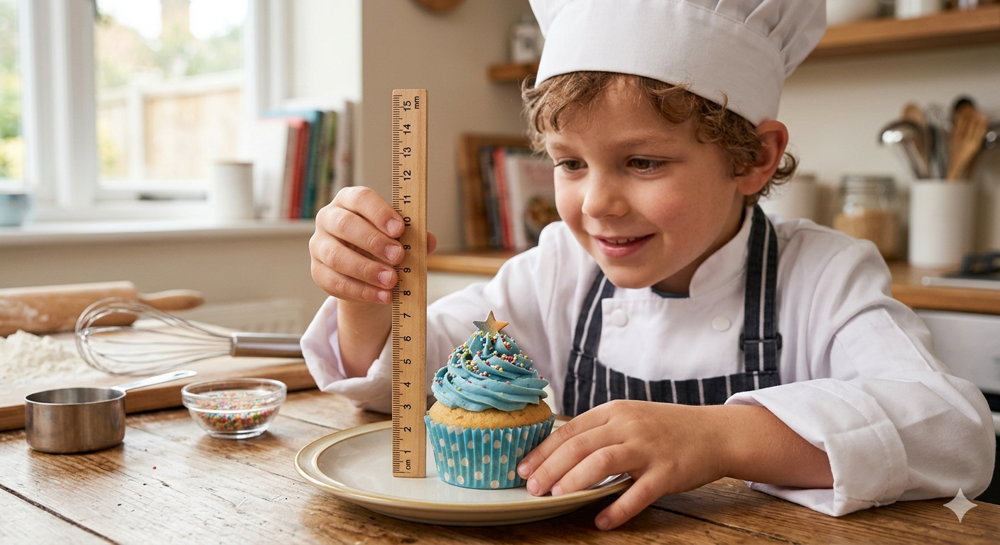

PROYECTO: De la receta al negocio
¿Las matemáticas sirven para cocinar… y ganar dinero?

Imagina que abres un pequeño negocio de repostería con tu equipo. Tenéis una receta deliciosa, pero aparece un problema:
- La receta está escrita con unidades que no conocéis.
- Hay que cocinar para muchas más personas.
- Debéis calcular cuánto cuesta preparar cada ración.
- Y además… decidir el precio para no perder dinero.
A partir de ahora os convertiréis en:
👨🍳 Cocineros y cocineras,
📏 Expertos en medidas,
💰 Responsables de cuentas y precios,
🧠 Y matemáticos capaces de resolver problemas reales.
¿Qué vais a hacer?
Durante este proyecto tendréis que superar diferentes retos:
🧩 Reto 1 — Entender la receta
Trabajaréis con recetas reales y aprenderéis a:
- convertir unidades,
- usar el sistema métrico decimal,
- y transformar medidas al sistema imperial.
¿Sabéis cuánto es una ounce?
¿O cuántas cups son 250 ml?
🧩 Reto 2 — Adaptar la producción
Una receta para 4 personas no sirve si llegan 10 clientes.
Tendréis que:
- modificar cantidades,
- usar proporcionalidad,
- y resolver situaciones reales de cocina y organización.
Porque…
¿más cocineros significan menos tiempo?
¿Siempre ocurre lo mismo?
🧩 Reto 3 — Calcular costes y vender
Aquí empieza el verdadero negocio.
Tendréis que:
- calcular cuánto cuesta vuestra receta,
- saber el precio por ración,
- aplicar porcentajes,
- y decidir cuánto cobrar para obtener beneficios.
El objetivo final será crear un producto que funcione de verdad.
🍰 Producto final
Al terminar el proyecto presentaréis:
✅ vuestra receta adaptada,
✅ los cálculos realizados,
✅ el coste final,
✅ y vuestra propuesta de venta.
¿Conseguiréis crear el mejor negocio de la clase?